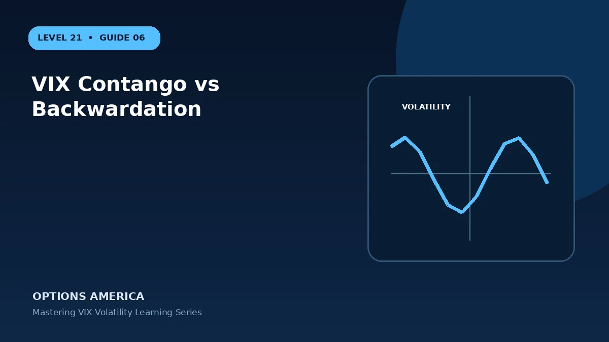

Understand upward- and downward-sloping volatility futures curves and their market implications.
Define management before entry
Management is a sequence of new choices, not a way to erase history. Preserve the original cost and every subsequent debit or credit in vix contango vs backwardation. Recalculate the remaining payoff after any adjustment and compare it with the alternative of closing and holding no position.
Start with the objective
Treat vix contango vs backwardation as a decision problem before treating it as an order ticket. Understand upward- and downward-sloping volatility futures curves and their market implications. Define success in dollars and time, then identify the market path that would make the position unnecessary or ineffective. This prevents a familiar strategy name from replacing analysis.
Understand the economic exposure
To understand the exposure, translate vix contango vs backwardation into rights, obligations and cash flows. Contango and backwardation describe relationships among futures maturities, not a promise about future spot VIX direction. Then calculate what happens at expiration and what can happen earlier when implied volatility, skew or liquidity changes. Both views are required for a complete risk estimate.
Measure more than one outcome
Create a small matrix rather than relying on one payoff chart: several market levels across today, the planned review date and expiration. For vix contango vs backwardation, add nonparallel volatility changes where relevant. Compare every result with the portfolio loss limit and available buying-power reserve.
Check the changing Greeks
Delta, gamma, theta and vega are snapshots around current inputs. In vix contango vs backwardation, the dominant Greek can change as price moves or expiration approaches. Recalculate after a meaningful move and review the portfolio total; offsetting today's delta does not neutralize tomorrow's gamma or volatility exposure.
Plan execution and liquidity
Execution belongs in the analysis, not in a footnote. Estimate entry and exit slippage for vix contango vs backwardation, check whether each leg trades actively and understand what happens at expiration. A strategy with a small theoretical edge may have no practical edge after two trips through a wide market.
A practical example
If front-month VIX futures trade at 26 and second month at 23, the nearby curve is backwardated.
This simplified example is educational and focuses on selected outcomes. Live prices also reflect time, implied volatility, skew, rates, dividends where applicable, liquidity, settlement conventions and transaction costs. Greeks and scenario values are estimates, not guarantees.
Decision checklist
Confirm the market thesis and time horizon. Calculate the full-position payoff and premium at risk. Stress price, volatility and time together. Check contract specifications and settlement. Set the maximum account-level loss, reserve capital and exit trigger. Finally, record the result after closing so the next decision is based on evidence rather than memory.
Frequently asked questions
What is the key idea behind VIX Contango vs Backwardation?
Contango and backwardation describe relationships among futures maturities, not a promise about future spot VIX direction.
Does the example guarantee a live-market result?
No. It is an educational scenario; live prices, volatility, liquidity, costs and contract terms can change the outcome.
What should be defined before entry?
The objective, size, maximum tolerated loss, review triggers, settlement or assignment plan and exit date.
Continue the Mastering VIX Volatility cluster
Explore related guides: VIX Futures vs Spot VIX · VIX vs Realized Volatility · How Is the VIX Calculated?. For a structured sequence, use the free Level 21 – Mastering VIX Volatility course.
Options and volatility products involve risk and are not suitable for every investor. This material is educational and is not investment, tax or legal advice. Verify current contract specifications with the exchange and your broker.